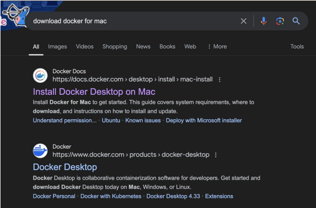
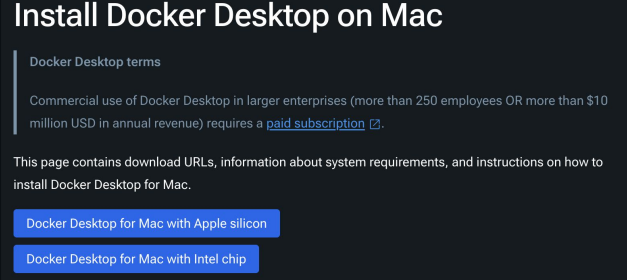
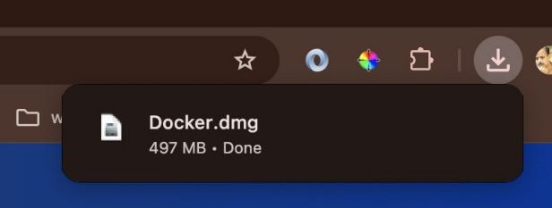
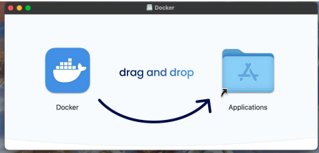
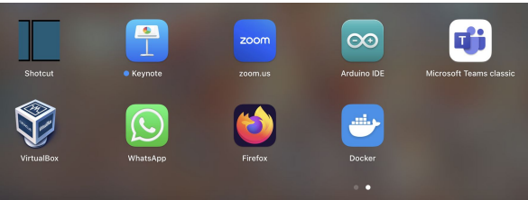
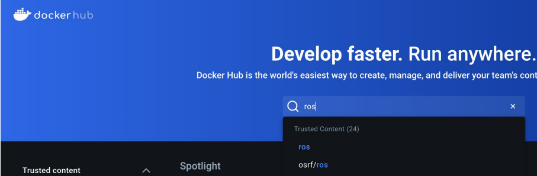
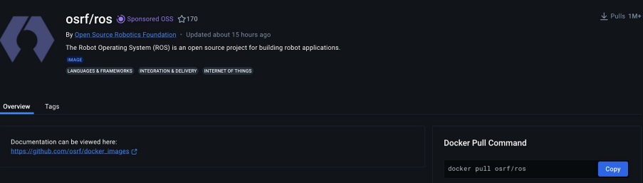
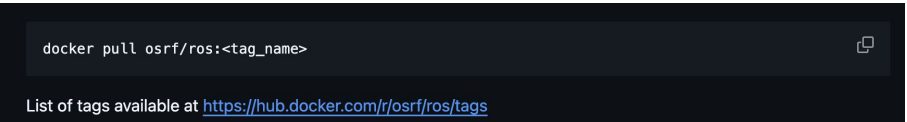
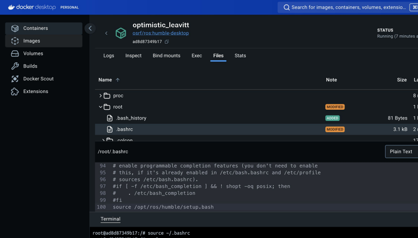

ROS2 Installation Using Docker (Docker and Container)
Docker and Container
Docker is a platform that enables developers to create, deploy, and run applications inside lightweight containers.
Containers package an application and its dependencies together, ensuring consistency across different environments.
Unlike virtual machines, containers share the host system's kernel, making them more efficient and quicker to start up.
Setting-Up Docker and Container





Setting-Up Docker for ROS

 https://github.com/osrf/docker_images?tab=readme-ov-file
 https://hub.docker.com/r/osrf/ros/tags
% docker pull osrf/ros:<tag_name>% docker pull osrf/ros:humble-desktopList images in the Docker
% docker imagesRun image in a container
% docker run -it osrf/ros:humble-desktop$ apt-get update$ lsb_release -aCheck the container running
% docker psWe can use 'docker exec' command to connect to a running container in another terminal
% docker exec -it <id> bashSource ros2 environment and use it Source /opt/ros/humble/setup.bash
We can add the source command in root/.bashrc
$ docker run -it -v $PWD/source:destination <id>$ docker run -it -v $PWD/source:destination --name <name> <id>Thank You. End of ROS2 Installation Using Docker (Docker and Container).